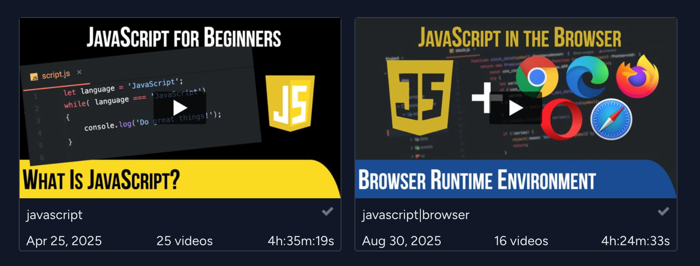

“I was under marketing orders to make it look like Java but not make it too big for its britches. It's just this sort of silly little brother language, right? The sidekick to Java.”— Brendan Eich (creator of JavaScript)

A Brief History
- JavaScript origins (1995, Netscape) - created in just 10 days by Brendan Eich.
- Originally only for front-end interactivity in browsers
- The browser wars --> standardization of ECMAScript.
- For years, JavaScript = front-end only.
JS was like a band that only played "opening acts" until Node.js gave it a shot at "headlining the concert"!
Enter Node.js (2009)
- Created by Ryan Dahl.
- Key innovation: V8 engine (Google Chrome's JavaScript engine).
- Wrapped V8 with system bindings --> allowed JS to do file I/O, networking, etc.
- Event-driven, non-blocking I/O model --> perfect for scalable network applications.
The language you used in the browser can run your backend too!
Benefits of JavaScript on the Server
- Single language, full stack: frontend + backend + even DB queries (MongoDB).
- Massive ecosystem (npm): world's largest package registry.
- Productivity & learning curve: one language across the stack reduces context-switching.
- Community & job market: widely adopted in startups and enterprises.
Use Cases
- APIs & web servers (Express.js, Fastify).
- Dynamic websites (EJS, Next.js, Adonis).
- Real-time apps (chat, games, live collaboration --> powered by WebSockets).
- Command-line tools (npm CLI, ESLint, Prettier) all built with Node.js.
- Microservices and serverless (AWS Lambda, Vercel, Netlify).
- Even IoT & robotics (Johnny-Five, Node-RED).
Code Example
Hello, World!
// In the browser
<script>
console.log("Hello from the browser!");
</script>
// Using Node.js
node -e "console.log('Hello from Node.js!')";
Code Example
Tiny Web Server
// hello-server.js
const http = require(“http”);
const server = http.createServer((req, res) => {
res.end(“Hello from the server!”);
});
server.listen(3000, () => {
console.log(“Server running at http://localhost:3000”);
});
// command line
node hello-server.js
Up Next
Getting Started
- Installing Node
- Interactive Mode
- Running Your First Script